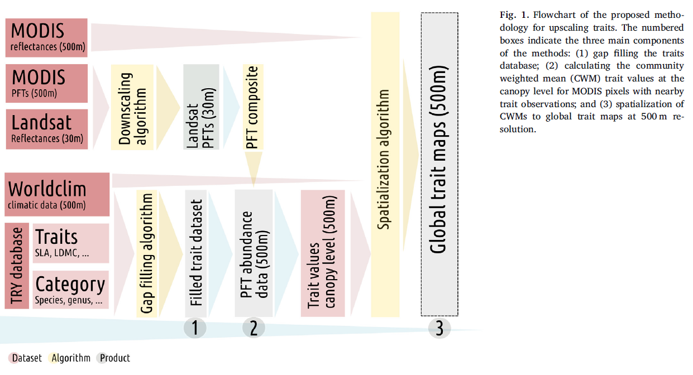
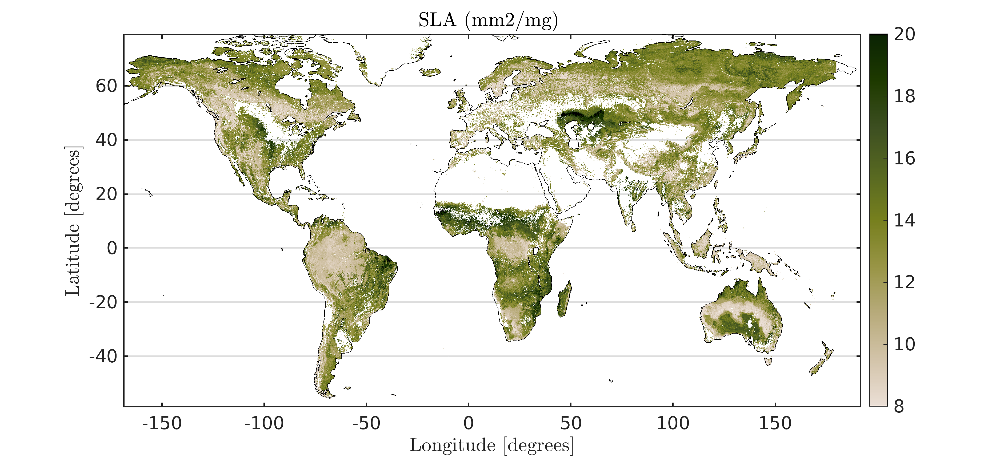
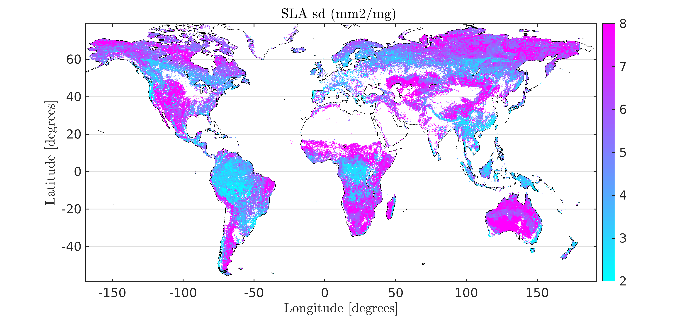
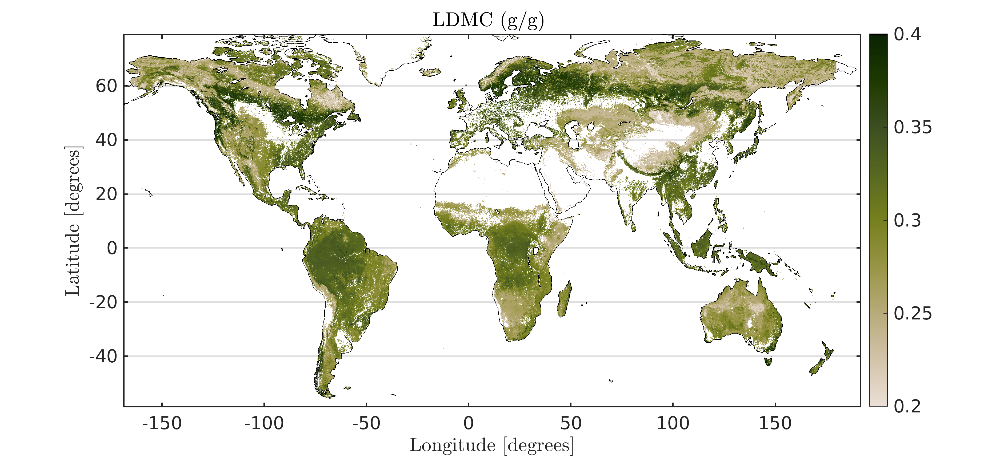
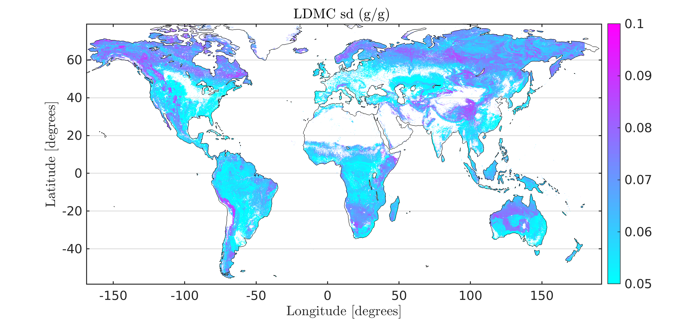
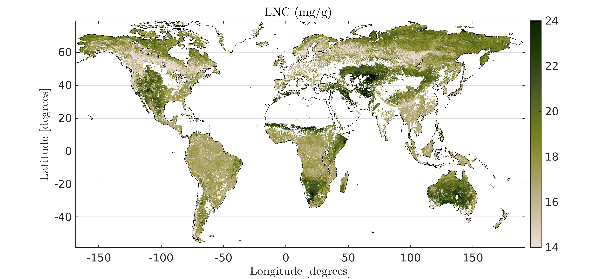
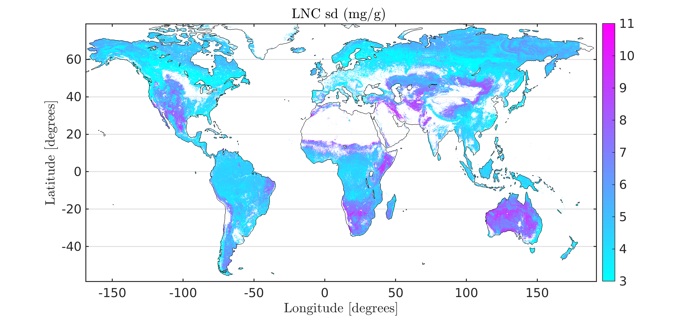
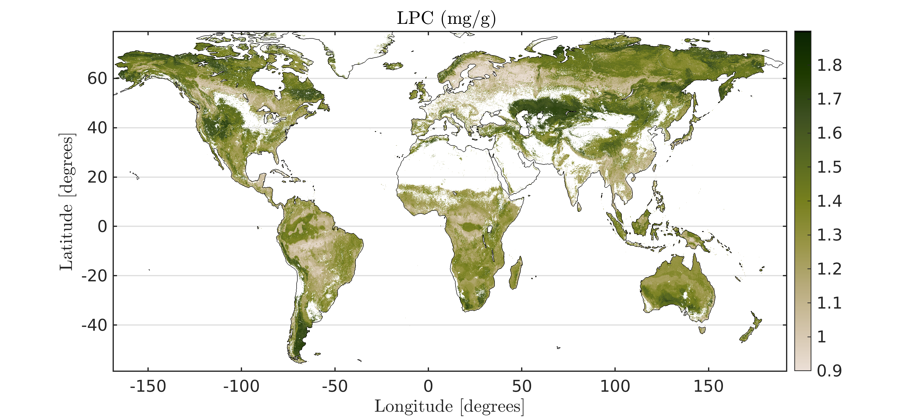
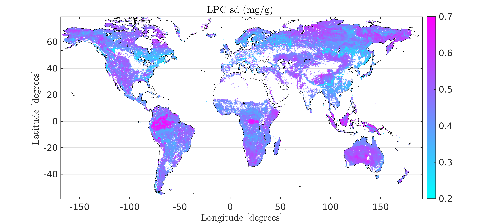

We provide global high-resolution maps of leaf traits. In particular, we present global maps of specific leaf area, leaf dry matter content, leaf nitrogen and phosphorus content per dry mass. The methodology combines MODIS and Landsat data, climatological data, the TRY database and machine learning algorithms.
What is this about?
We introduce a modular processing chain to derive global high-resolution maps of leaf traits. In particular, we present global maps specific leaf area, leaf dry matter content, leaf nitrogen and phosphorus content per dry mass. The processing chain exploits machine-learning techniques along with optical remote sensing data (MODIS/Landsat) and climate data for gap filling and up-scaling of in-situ measured leaf traits. The chain first uses random forests regression with surrogates to fill gaps in the database (> 45% of missing entries) and maximizes the global representativeness of the trait dataset. Plant species are then aggregated to Plant Functional Types (PFTs). Next, the spatial abundance of PFTs at MODIS resolution (1 km) is calculated using Landsat data (30 m). Based on these PFT abundances, representative trait values are calculated for MODIS pixels with nearby trait data. Finally, different regression algorithms are applied to globally predict trait estimates from these MODIS pixels using remote sensing and climate data. The methods were compared in terms of precision, robustness and efficiency. The best model (random forests regression) shows good precision (normalized RMSE≤ 20%) and goodness of fit (averaged Pearson's correlation R = 0.78) in any considered trait. Along with the estimated global maps of leaf traits, we provide associated uncertainty estimates derived from the regression models. The process chain is modular, and can easily accommodate new traits, data streams (traits databases and remote sensing data), and methods. The machine learning techniques applied allow attribution of information gain to data input and thus provide the opportunity to understand trait-environment relationships at the plant and ecosystem scales. The new data products – the gap-filled trait matrix, a global map of PFT abundance per MODIS grid-cells and the high-resolution global leaf trait maps – are complementary to existing large-scale observations of the land surface and we, therefore, anticipate substantial contributions to advances in quantifying, understanding and prediction of the Earth system.

Processed traits
Specific Leaf Area (SLA)
SLA is a key trait of the leaf economics spectrum reflecting the trade-off between leaf longevity and carbon gain (Wright et al. 2004, Nature). SLA is thus indicative for different plant life strategies with respect to fast versus slow return of carbon investments.

Leaf Dry Matter Content (LDMC)
LDMC and SLA are directly correlated with relative growth rate, which is a predictor of plant response to resource availability and disturbance.

Leaf Nitrogen Concentration (LNC) & Leaf Phosphorus Concentration (LPC)
LNC relates to the amount of proteins involved in the photosynthetic machinery, while phosphorus is a key constituent of nucleic acids, lipid membranes and bioenergetic molecules (e.g. ATP) directly involved in cell metabolism. Leaf Nitrogen Concentration (LNC) and Leaf Phosphorus Concentration (LPC) correlate with SLA and are therefore considered part of the leaf economics spectrum.


Updates since the published version:
Version 2.0 of the processing chain prevents extrapolation and uses an updated categorical trait table. To prevent extrapolations, this updated version of the processing chain uses the random forest algorithm (RF) with surrogates for the estimation of trait values. RF with surrogates allows to obtain an ensemble of models inside the convex hull of the input data for the predictions. Additionally, the use of an updated and more extensive categorical trait table allowed increasing the amount of training samples to produce the maps.
Where to access the data?
The data is available at two spatial resolutions 3km and 1km. It can be downloaded from:
https://www.try-db.org/TryWeb/Data.php#59
and
https://www.try-db.org/TryWeb/Data.php#60
Reference for publication
Moreno-Martínez, Á., Camps-Valls, G., Kattge, J., Robinson, N., Reichstein, M., Bodegom,
P. V., Kramer, K., Cornelissen, J. H. C., Reich, P. B., Bahn, M.,
Niinemets, Ü., Peñuelas, J., Craine, J., Cerabolini, B., Minden, V.,
Laughlin, D. C., Sack, L., Allred, B., Baraloto, C., Byun, C.,
Soudzilovskaia, N. A., Running, S. W. (2018). A methodology to derive
global maps of leaf traits using remote sensing and climate data.
Remote Sensing of Environment, 218, 69-88.
https://doi.org/10.1016/j.rse.2018.09.006
Contact
If you have any question about, please, do not hesitate to write an email to Alvaro Moreno (alvaro.moreno@uv.es).